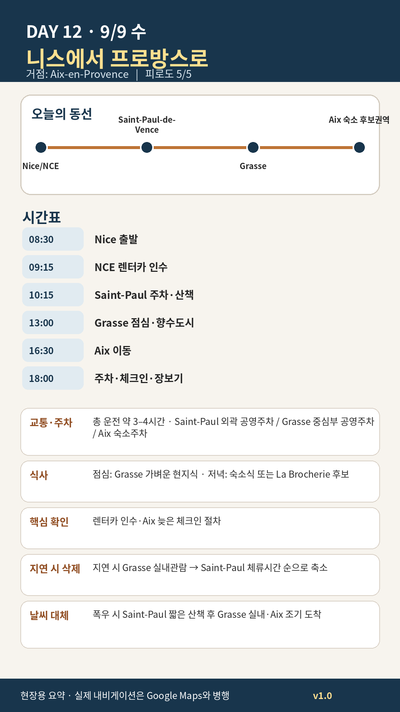

Day 12 · 9/9 수 · Aix Phase 4 최종
P0 연결거점 이동양쪽 챕터
오늘의 감사 요약
- 핵심 실행
- NCE 인수→Saint-Paul→Grasse→Aix
- 권장 출발
- 08:30 Nice 출발
- 완충
- 렌터카 인수 60–90분
- 최고 리스크
- 인수지연·체크인·주차
- 우선 삭제
- Grasse 실내→Saint-Paul 체류 축소
- 대체안
- Grasse 실내 후 Aix 조기도착
- 식사·휴식
- Grasse 점심
- 잠금 필요
- 렌터카·Aix 숙소
피로도
5/5
원고의 일자별 피로도 표기다.
시간표
| 07:00–08:00 | 체크아웃·간단한 아침 | 차량용 물·간식 준비 |
| 09:30–11:00 | Saint-Paul-de-Vence | 골목·성벽·짧은 스케치 |
| 11:00–12:00 | 가벼운 점심·이동 | 긴 코스식 금지 |
| 12:30–14:00 | Grasse vieille ville | 향수 시향 또는 짧은 공방 |
| 14:30–17:00 | Grasse → Aix | A8 정체에 따라 변동 |
이 날의 장소
일자별 시간표와 본문 표기에서 찾은 것이다. 하루의 전부가 아니라 장소 카드가 있는 것만 담는다.
카드 이미지 보기

카드의 지도영역은 일정 순서를 보여주는 개요이며 내비게이션이 아닙니다. 실제 도보·운전 경로는 Google Maps에서 다시 계산하세요.